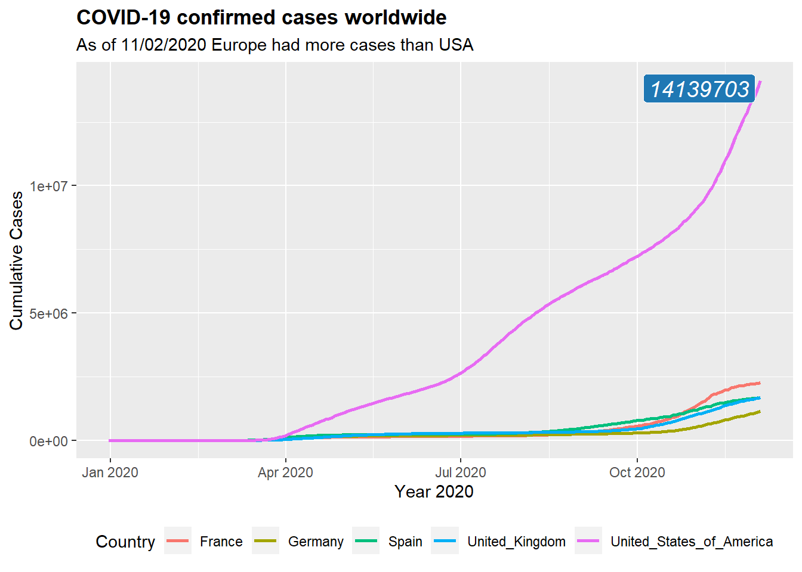

Journal (reproducible report)
Papul Ghosh
2020-12-06
1 Challenge 1: Intro to Tidyverse
Last compiled: 2020-12-04
1.1 Challenge 1.1
Analyze the sales by location (state) with a bar plot. Since state and city are multiple features (variables), they should be split. Which state has the highes revenue? Replace your bike_orderlines_wrangled_tbl object with the newly wrangled object (with the columns state and city)
# Data Science at TUHH ------------------------------------------------------
# SALES ANALYSIS ----
# 1.0 Load libraries ----
library(tidyverse)
library(readxl)
library(lubridate)
# 2.0 Importing Files ----
bikes_tbl <- read_excel("data-science/DS_101/00_data/01_bike_sales/01_raw_data/bikes.xlsx")
orderlines_tbl <- read_excel("data-science/DS_101/00_data/01_bike_sales/01_raw_data/orderlines.xlsx")
bikeshops_tbl <- read_excel("data-science/DS_101/00_data/01_bike_sales/01_raw_data/bikeshops.xlsx")
# 3.0 Examining Data ----
orderlines_tbl## # A tibble: 15,644 x 7
## ...1 order.id order.line order.date customer.id product.id quantity
## <chr> <dbl> <dbl> <dttm> <dbl> <dbl> <dbl>
## 1 1 1 1 2015-01-07 00:00:00 2 2681 1
## 2 2 1 2 2015-01-07 00:00:00 2 2411 1
## 3 3 2 1 2015-01-10 00:00:00 10 2629 1
## 4 4 2 2 2015-01-10 00:00:00 10 2137 1
## 5 5 3 1 2015-01-10 00:00:00 6 2367 1
## 6 6 3 2 2015-01-10 00:00:00 6 1973 1
## 7 7 3 3 2015-01-10 00:00:00 6 2422 1
## 8 8 3 4 2015-01-10 00:00:00 6 2655 1
## 9 9 3 5 2015-01-10 00:00:00 6 2247 1
## 10 10 4 1 2015-01-11 00:00:00 22 2408 1
## # ... with 15,634 more rows# 4.0 Joining Data ----
bike_orderlines_joined_tbl <- orderlines_tbl %>%
left_join(bikes_tbl, by = c("product.id" = "bike.id")) %>%
left_join(bikeshops_tbl, by = c("customer.id" = "bikeshop.id"))
bike_orderlines_joined_tbl %>% glimpse()## Rows: 15,644
## Columns: 19
## $ ...1 <chr> "1", "2", "3", "4", "5", "6", "7", "8", "9", "10", "...
## $ order.id <dbl> 1, 1, 2, 2, 3, 3, 3, 3, 3, 4, 5, 5, 5, 5, 6, 6, 6, 6...
## $ order.line <dbl> 1, 2, 1, 2, 1, 2, 3, 4, 5, 1, 1, 2, 3, 4, 1, 2, 3, 4...
## $ order.date <dttm> 2015-01-07, 2015-01-07, 2015-01-10, 2015-01-10, 201...
## $ customer.id <dbl> 2, 2, 10, 10, 6, 6, 6, 6, 6, 22, 8, 8, 8, 8, 16, 16,...
## $ product.id <dbl> 2681, 2411, 2629, 2137, 2367, 1973, 2422, 2655, 2247...
## $ quantity <dbl> 1, 1, 1, 1, 1, 1, 1, 1, 1, 1, 1, 2, 1, 1, 1, 1, 1, 1...
## $ model <chr> "Spectral CF 7 WMN", "Ultimate CF SLX Disc 8.0 ETAP"...
## $ model.year <dbl> 2021, 2020, 2021, 2019, 2020, 2020, 2020, 2021, 2020...
## $ frame.material <chr> "carbon", "carbon", "carbon", "carbon", "aluminium",...
## $ weight <dbl> 13.80, 7.44, 14.06, 8.80, 11.50, 8.80, 8.20, 8.85, 1...
## $ price <dbl> 3119, 5359, 2729, 1749, 1219, 1359, 2529, 1559, 3899...
## $ category <chr> "Mountain - Trail - Spectral", "Road - Race - Ultima...
## $ gender <chr> "female", "unisex", "unisex", "unisex", "unisex", "u...
## $ url <chr> "https://www.canyon.com/en-de/mountain-bikes/trail-b...
## $ name <chr> "AlexandeRad", "AlexandeRad", "WITT-RAD", "WITT-RAD"...
## $ location <chr> "Hamburg, Hamburg", "Hamburg, Hamburg", "Bremen, Bre...
## $ lat <dbl> 53.57532, 53.57532, 53.07379, 53.07379, 48.78234, 48...
## $ lng <dbl> 10.015340, 10.015340, 8.826754, 8.826754, 9.180819, ...# 5.0 Wrangling Data ----
bike_orderlines_wrangled_tbl <- bike_orderlines_joined_tbl %>%
# 5.1 Separate category name
separate(col = location,
into = c("city", "state"),
sep = ",") %>%
mutate(total.price = price * quantity) %>%
select(-...1, -gender) %>%
select(-ends_with(".id")) %>%
bind_cols(bike_orderlines_joined_tbl %>% select(order.id)) %>%
select(order.id, contains("order"), contains("model"), contains("category"),
price, quantity, total.price,
everything()) %>%
rename(bikeshop = name) %>%
set_names(names(.) %>% str_replace_all("\\.", "_"))
# 6.0 Business Insights ----
# 6.1 Sales by Year ----
# Step 1 - Manipulate
sales_by_state_tbl <- bike_orderlines_wrangled_tbl %>%
select(state, total_price) %>%
group_by(state) %>%
summarize(sales = sum(total_price)) %>%
mutate(sales_text = scales::dollar(sales, big.mark = ".",
decimal.mark =",",
prefix = "",
suffix = " €"))
sales_by_state_tbl## # A tibble: 12 x 3
## state sales sales_text
## <chr> <dbl> <chr>
## 1 " Baden-Württemberg" 6521090 6.521.090 €
## 2 " Bavaria" 6742819 6.742.819 €
## 3 " Berlin" 1128433 1.128.433 €
## 4 " Bremen" 10653499 10.653.499 €
## 5 " Hamburg" 3874756 3.874.756 €
## 6 " Hesse" 1558901 1.558.901 €
## 7 " Lower Saxony" 4107115 4.107.115 €
## 8 " Mecklenburg-Western Pomerania" 618974 618.974 €
## 9 " North Rhine-Westphalia" 21200613 21.200.613 €
## 10 " Saxony" 2230245 2.230.245 €
## 11 " Saxony-Anhalt" 569614 569.614 €
## 12 " Schleswig-Holstein" 3224749 3.224.749 €# Step 2 - Visualize
sales_by_state_tbl %>%
ggplot(aes(x = state, y = sales)) +
theme(axis.text.x = element_text(angle = 45, hjust = 1))+
geom_col(fill = "#2DC6D6") + # Use geom_col for a bar plot
geom_label(aes(label = sales_text)) + # Addin? labels to the bars
geom_smooth(method = "lm", se = FALSE) + # Adding a trendline
scale_y_continuous(labels = scales::dollar_format(big.mark = ".",
decimal.mark = ",",
prefix = "",
suffix = " €")) +
labs(
title = "Revenue by state",
subtitle = "Upward Trend",
x = "", # Override defaults for x and y
y = "Revenue"
)
1.2 Challenge 1.2
Analyze the sales by location and year (facet_wrap). Because there are 12 states with bike stores, you should get 12 plots.
#6.2 Sales by Year and Category 2 ----
# Step 1 - Manipulate
sales_by_state_year_tbl <- bike_orderlines_wrangled_tbl %>%
select(state, order_date, total_price) %>%
mutate(year = year(order_date)) %>%
group_by(state, year) %>%
summarize(sales = sum(total_price)) %>%
mutate(sales_text = scales::dollar(sales, big.mark = ".",
decimal.mark = ",",
prefix = "",
suffix = " €"))
sales_by_state_year_tbl## # A tibble: 60 x 4
## # Groups: state [12]
## state year sales sales_text
## <chr> <int> <dbl> <chr>
## 1 " Baden-Württemberg" 2015 1031924 1.031.924 €
## 2 " Baden-Württemberg" 2016 1561658 1.561.658 €
## 3 " Baden-Württemberg" 2017 1224152 1.224.152 €
## 4 " Baden-Württemberg" 2018 1114327 1.114.327 €
## 5 " Baden-Württemberg" 2019 1589029 1.589.029 €
## 6 " Bavaria" 2015 1301461 1.301.461 €
## 7 " Bavaria" 2016 1129852 1.129.852 €
## 8 " Bavaria" 2017 1411851 1.411.851 €
## 9 " Bavaria" 2018 1168783 1.168.783 €
## 10 " Bavaria" 2019 1730872 1.730.872 €
## # ... with 50 more rows# Step 2 - Visualize
sales_by_state_year_tbl %>%
# Set up x, y, fill
ggplot(aes(x = state, y = sales, fill = year)) +
# Geometries
geom_col() + # Run up to here to get a stacked bar plot
# Facet
facet_wrap(~ year) +
# Formatting
scale_y_continuous(labels = scales::dollar_format(big.mark = ".",
decimal.mark = ",",
prefix = "",
suffix = " €")) +
labs(
title = "Revenue by year and state",
#subtitle = "Each product category has an upward trend",
fill = "Year" # Changes the legend name
)
2 Challenge 2: Data Acquisition
Last compiled: 2020-12-04
2.1 Challenge 2.1:
Get some data via an API. There are millions of providers, that offer API access for free and have good documentation about how to query their service. You just have to google them. You can use whatever service you want. For example, you can get data about your listening history (spotify), get data about flights (skyscanner) or just check the weather forecast.
library(RedditExtractoR)
library(dplyr)
getcontent <- get_reddit(
search_terms = "US election",
subreddit = NA,
page_threshold = 1,
cn_threshold =10000
)getnews<- getcontent %>%
select(id, post_date, num_comments , user, comment, title, URL)
head(getnews)## id post_date num_comments user
## 1 1 07-11-18 32131 et3rnal420
## 2 2 07-11-18 32131 [deleted]
## 3 3 07-11-18 32131 Retireegeorge
## 4 4 07-11-18 32131 et3rnal420
## 5 5 07-11-18 32131 Retireegeorge
## 6 6 07-11-18 32131 et3rnal420
## comment
## 1 Because the guy who put it together (Christopher Steele) said most of it wasn't corroborated and after two years of investigations it still can't be corroborated. My question is since u guys are so concerned about Russia collusion is why aren't u concerned about Hillary paying a foreign spy to get dirt from Russians on Trump? Or about how many people who have been fired from the DOJ and FBI that got this whole mess started? You've got Bruce and Nellie Ohr, Andrew McCabe, Peter Strzok, Lisa Page, Comey and There is like 15 more people. The MSM has completely ignored this and it's going to be the biggest case of corruption ever. Smh.
## 2 Holy fuck how stupid can you be? Do you like being ostracized because you want to hold edgy dumbass views that are completely unfounded in literally any fact? It just keeps you as the victim right?
## 3 Because Hillary isn\031t the President? Back when she was a candidate, then I would understand why you would have your priorities.
## 4 So because she lost the election she gets away with crimes? That makes absolutely no sense.
## 5 I\031ve got no problem with her being prosecuted. What I have a problem with is you lot using it as an argument as to why Trump shouldn\031t be.
## 6 Hillary literally obstructed Justice by destroying her blackberries and 30,000 emails that were under subpoena. And all I hear from you lot is well she didn't win so who cares.
## title
## 1 Megathread: Attorney General Jefferson Sessions Resigns at Request of President Donald Trump
## 2 Megathread: Attorney General Jefferson Sessions Resigns at Request of President Donald Trump
## 3 Megathread: Attorney General Jefferson Sessions Resigns at Request of President Donald Trump
## 4 Megathread: Attorney General Jefferson Sessions Resigns at Request of President Donald Trump
## 5 Megathread: Attorney General Jefferson Sessions Resigns at Request of President Donald Trump
## 6 Megathread: Attorney General Jefferson Sessions Resigns at Request of President Donald Trump
## URL
## 1 http://www.reddit.com/r/politics/comments/9v2ov8/megathread_attorney_general_jefferson_sessions/?ref=search_posts
## 2 http://www.reddit.com/r/politics/comments/9v2ov8/megathread_attorney_general_jefferson_sessions/?ref=search_posts
## 3 http://www.reddit.com/r/politics/comments/9v2ov8/megathread_attorney_general_jefferson_sessions/?ref=search_posts
## 4 http://www.reddit.com/r/politics/comments/9v2ov8/megathread_attorney_general_jefferson_sessions/?ref=search_posts
## 5 http://www.reddit.com/r/politics/comments/9v2ov8/megathread_attorney_general_jefferson_sessions/?ref=search_posts
## 6 http://www.reddit.com/r/politics/comments/9v2ov8/megathread_attorney_general_jefferson_sessions/?ref=search_posts2.2 Challenge 2.2:
Scrape one of the competitor websites of canyon (either https://www.rosebikes.de/ or https://www.radon-bikes.de) and create a small database. The database should contain the model names and prices for at least one category. Use the selectorgadget to get a good understanding of the website structure.
# WEBSCRAPING ----
# 1 LIBRARIES ----
library(tidyverse) # Main Package - Loads dplyr, purrr, etc.
library(rvest) # HTML Hacking & Web Scraping
library(xopen) # Quickly opening URLs
library(jsonlite) # converts JSON files to R objects
library(glue) # concatenate strings
library(stringi)
library(writexl)
# 1.1 COLLECT PRODUCT FAMILIES ----
url_home <- "https://www.rosebikes.de"
html_home <- read_html(url_home)
bike_family_tbl <- html_home %>%
html_nodes(css = ".main-navigation-category-with-tiles__item > a") %>%
html_attr('href')%>%
enframe(name = "position", value = "subdirectory") %>%
mutate(
url = glue("https://www.rosebikes.de{subdirectory}")
) %>%
distinct(url)
bike_family_tbl## # A tibble: 11 x 1
## url
## <glue>
## 1 https://www.rosebikes.de/fahrräder/mtb
## 2 https://www.rosebikes.de/fahrräder/rennrad
## 3 https://www.rosebikes.de/fahrräder/gravel
## 4 https://www.rosebikes.de/fahrräder/cyclocross
## 5 https://www.rosebikes.de/fahrräder/fitness
## 6 https://www.rosebikes.de/fahrräder/e-bike
## 7 https://www.rosebikes.de/fahrräder/trekking
## 8 https://www.rosebikes.de/fahrräder/reise
## 9 https://www.rosebikes.de/fahrräder/urban
## 10 https://www.rosebikes.de/fahrräder/kinder
## 11 https://www.rosebikes.de/fahrräder/sale# 2 COLLECT BIKE DATA ---
bike_category_url <- bike_family_tbl$url[1]
bike_category_url## https://www.rosebikes.de/fahrräder/mtbbike_Model_tbl <- bike_category_url %>%
read_html() %>%
html_nodes(css = ".catalog-category-bikes__title-text") %>%
html_text()%>%
enframe(name = "id", value = "Model")
bike_Price_tbl <- bike_category_url %>%
read_html() %>%
html_nodes(css = ".catalog-category-bikes__price-title") %>%
html_text()%>%
enframe(name = "id", value = "Price")
bike_Installment_tbl <- bike_category_url %>%
read_html() %>%
html_nodes(css = ".catalog-category-bikes__price-subtitle") %>%
html_text()%>%
enframe(name = "id", value = "Installment")
bike_tbl <- bike_Model_tbl %>%
left_join(bike_Price_tbl)%>%
left_join(bike_Installment_tbl)
bike_tbl## # A tibble: 9 x 4
## id Model Price Installment
## <int> <chr> <chr> <chr>
## 1 1 "\nGROUND CONTROL~ "\nab 1.699,00~ "\nab 35,00 € mtl. / Dienstrad-Leasi~
## 2 2 "\nROOT MILLER\n" "\nab 1.999,00~ "\nab 41,50 € mtl. / Dienstrad-Leasi~
## 3 3 "\nPIKES PEAK\n" "\nab 3.099,00~ "\nab 64,00 € mtl. / Dienstrad-Leasi~
## 4 4 "\nTHE BRUCE\n" "\n" "\n"
## 5 5 "\nCOUNT SOLO\n" "\n" "\n"
## 6 6 "\nPSYCHO PATH\n" "\nab 1.849,00~ "\nab 38,50 € mtl. / Dienstrad-Leasi~
## 7 7 "\nTHRILL HILL\n" "\nab 2.599,00~ "\nab 54,00 € mtl. / Dienstrad-Leasi~
## 8 8 "\nTHRILL HILL TR~ "\nab 2.899,00~ "\nab 60,00 € mtl. / Dienstrad-Leasi~
## 9 9 "\nSOUL FIRE\n" "\nab 2.149,00~ "\nab 44,50 € mtl. / Dienstrad-Leasi~3 Challenge 3: Data Wrangling
Last compiled: 2020-12-04
3.1 Challenge 3.1:
Patent Dominance: What US company / corporation has the most patents? List the 10 US companies with the most assigned/granted patents.
library(tidyverse)
library(vroom)
# Data Table
library(data.table)
# Counter
library(tictoc)
# 2.0 DATA IMPORT ----
# 2.1 Loan Acquisitions Data ----
assignee_col_types <- list(
id = col_character(),
type = col_double(),
name_first = col_character(),
name_last = col_character(),
organization = col_character()
)
assignee_tbl <- vroom(
file = "data-science/DS_101/00_data/patent/assignee.tsv",
delim = "\t",
col_types = assignee_col_types,
na = c("", "NA", "NULL")
)
patent_assignee_col_types <- list(
patent_id = col_character(),
assignee_id = col_character(),
location_id = col_character()
)
patent_assignee_tbl <- vroom(
file = "data-science/DS_101/00_data/patent/patent_assignee.tsv",
delim = "\t",
col_types = patent_assignee_col_types,
na = c("", "NA", "NULL")
)
setDT(assignee_tbl)
setDT(patent_assignee_tbl)
setnames(assignee_tbl, "id", "assignee_id")
patent_tbl <- assignee_tbl %>%
left_join(patent_assignee_tbl, by = "assignee_id")
count_patent <- patent_tbl[, .(.N), by = .(organization)]
setnames(count_patent, "N", "patents")
count_patent %>%
select(organization, patents) %>%
arrange(desc(patents)) %>%
slice(1:10)## organization patents
## 1: International Business Machines Corporation 139092
## 2: <NA> 123331
## 3: Samsung Electronics Co., Ltd. 93562
## 4: Canon Kabushiki Kaisha 75910
## 5: Sony Corporation 54343
## 6: Kabushiki Kaisha Toshiba 49443
## 7: General Electric Company 47122
## 8: Hitachi, Ltd. 45375
## 9: Intel Corporation 42157
## 10: Fujitsu Limited 37197count_patent## organization patents
## 1: Barr Engineering Co. 2
## 2: Lhoist Recherche et Developpement S.A. 5
## 3: Weber Genetics, LLC 2
## 4: Samsung Dispaly Co., Ltd. 19
## 5: Nederlands Instituut voor Zuivelonderzoek 6
## ---
## 464601: Prufrex-Elektro-Apparatebau Inh. Helga Muller geb. Dutschke 1
## 464602: Warming Trends, Inc. 1
## 464603: TGBW Inc 2
## 464604: Societe d'Exploitation des Etablissements Pierre Grehal 2
## 464605: <NA> 1233313.2 Challenge 3.2:
Recent patent acitivity: What US company had the most patents granted in 2019? List the top 10 companies with the most new granted patents for 2019.
library(tidyverse)
library(vroom)
# Data Table
library(data.table)
# Counter
library(tictoc)
library(writexl)
# 2.0 DATA IMPORT ----
# 2.1 Loan Acquisitions Data ----
assignee_col_types <- list(
id = col_character(),
type = col_double(),
name_first = col_character(),
name_last = col_character(),
organization = col_character()
)
assignee_tbl <- vroom(
file = "data-science/DS_101/00_data/patent/assignee.tsv",
delim = "\t",
col_types = assignee_col_types,
na = c("", "NA", "NULL")
)
patent_assignee_col_types <- list(
patent_id = col_character(),
assignee_id = col_character(),
location_id = col_character()
)
patent_assignee_tbl <- vroom(
file = "data-science/DS_101/00_data/patent/patent_assignee.tsv",
delim = "\t",
col_types = patent_assignee_col_types,
na = c("", "NA", "NULL")
)
patent_col_types <- list(
id = col_character(),
type = col_character(),
number = col_character(),
country = col_character(),
date = col_date("%Y-%m-%d"),
abstract = col_character(),
title = col_character(),
kind = col_character(),
num_claims = col_double(),
filename = col_character(),
withdrawn = col_double()
)
Patent_tbl <- vroom(
file = "data-science/DS_101/00_data/patent/patent.tsv",
delim = "\t",
col_types = patent_col_types,
na = c("", "NA", "NULL")
)
patent_tbl %>%
select(id, date)
setDT(assignee_tbl)
setDT(patent_assignee_tbl)
setDT(Patent_tbl)
setnames(Patent_tbl, "id", "assignee_id")
setnames(assignee_tbl, "id", "assignee_id")
patent_tbl <- assignee_tbl %>%
left_join(patent_assignee_tbl, by = "assignee_id") %>%
left_join(patent_tbl, by = "assignee_id") %>%
separate(col = date,
into = c("year", "month", "day"),
sep = "-", remove = FALSE) %>%
mutate(
year = as.numeric(year),
month = as.numeric(month),
day = as.numeric(day)
) %>%
select(organization, year) %>%
filter(year == "2019")
count_patent <- patent_tbl[, .(.N), by = .(organization)]
setnames(count_patent, "N", "patents")
count_patent %>%
select(organization, patents) %>%
arrange(desc(patents)) %>%
slice(1:10)3.3 Challenge 3.3:
Innovation in Tech: What is the most innovative tech sector? For the top 10 companies (worldwide) with the most patents, what are the top 5 USPTO tech main classes? Answer the question with data.
library(tidyverse)
library(vroom)
# Data Table
library(data.table)
# Counter
library(tictoc)
# 2.0 DATA IMPORT ----
# 2.1 Loan Acquisitions Data ----
assignee_col_types <- list(
id = col_character(),
type = col_double(),
name_first = col_character(),
name_last = col_character(),
organization = col_character()
)
assignee_tbl <- vroom(
file = "data-science/DS_101/00_data/patent/assignee.tsv",
delim = "\t",
col_types = assignee_col_types,
na = c("", "NA", "NULL")
)
patent_assignee_col_types <- list(
patent_id = col_character(),
assignee_id = col_character(),
location_id = col_character()
)
patent_assignee_tbl <- vroom(
file = "data-science/DS_101/00_data/patent/patent_assignee.tsv",
delim = "\t",
col_types = patent_assignee_col_types,
na = c("", "NA", "NULL")
)
uspc_col_types <- list(
uuid = col_character(),
patent_id = col_character(),
mainclass_id = col_character(),
subclass_id = col_character(),
sequence = col_double()
)
uspc_tbl <- vroom(
file = "data-science/DS_101/00_data/patent/uspc.tsv",
delim = "\t",
col_types = uspc_col_types,
na = c("", "NA", "NULL")
)
setDT(assignee_tbl)
setDT(patent_assignee_tbl)
setDT(uspc_tbl)
setnames(assignee_tbl, "id", "assignee_id")
top_org_tbl <- patent_assignee_tbl %>%
left_join(assignee_tbl, by = "assignee_id")
top_org_tbl <- top_org_tbl[, .(.N), by = .(organization)]
setnames(top_org_tbl, "N", "patents")
top_org_tbl <- top_org_tbl %>%
arrange(desc(patents))
top_org_lst <- top_org_tbl[["organization"]][1:10]
top_org_lst
patent_tbl <- patent_assignee_tbl %>%
left_join(assignee_tbl, by = "assignee_id") %>%
left_join(uspc_tbl, by = "patent_id")
patent_tbl <- patent_tbl[, c("organization", "mainclass_id")]
top_mainclass <- patent_tbl %>%
filter(organization %in% top_org_lst) %>%
filter(!is.na(mainclass_id))
top_org_tbl <- top_mainclass[, .(.N), by = .(mainclass_id)]
setnames(top_org_tbl, "N", "Count")
top_org_tbl <- top_org_tbl %>%
arrange(desc(Count)) %>%
slice(1:5)
top_org_tbl4 Challenge 4: Data Visualisation
Last compiled: 2020-12-04
4.1 Challenge 4.1
#Challenge 4.1:
#1.0 Loading Libraries ----
library(tidyverse)
library(ggplot2)
library(ggrepel)
library(lubridate)
library(ggthemes)
library(maps)
library(data.table)
#2.0 Fetching Data
col_covid <- list(
dateRep = col_date("%d/%m/%Y"),
day = col_double(),
month = col_double(),
year = col_double(),
cases = col_double(),
deaths = col_double(),
countriesAndTerritories = col_character(),
geoId = col_character(),
countryterritoryCode = col_character(),
popData2019 = col_double(),
continentExp = col_character(),
`Cumulative_number_for_14_days_of_COVID-19_cases_per_100000` = col_double()
)
covid_data_tbl <- read_csv("https://opendata.ecdc.europa.eu/covid19/casedistribution/csv", col_types = col_covid)
#3.0 Challenge No.1
#Wrangling Data
covid_data_monthly_tbl<-covid_data_tbl%>%
select(dateRep, cases, countriesAndTerritories, continentExp) %>%
mutate(month = month(dateRep)) %>%
filter(countriesAndTerritories %in% c("Germany", "United_Kingdom" , "France" , "Spain", "United_States_of_America")) %>%
arrange(countriesAndTerritories,year(dateRep),month,date(dateRep))%>%
group_by(countriesAndTerritories) %>%
mutate(cum_cases=cumsum(cases)) %>%
ungroup()
max_values <- covid_data_monthly_tbl %>%
filter(countriesAndTerritories == "United_States_of_America")%>%
slice_max(cum_cases)
#Plotting Data
covid_data_monthly_tbl %>% ggplot(aes(x = date(dateRep), y = cum_cases, color = countriesAndTerritories)) +
geom_line(size = 1)+
expand_limits(y = 3e6) +
#theme_economist() +
theme(
legend.position = "bottom" ,
plot.title = element_text(face = "bold"),
plot.caption = element_text(face = "bold.italic")) +
labs(
title = "COVID-19 confirmed cases worldwide",
subtitle = "As of 11/02/2020 Europe had more cases than USA ",
x = "Year 2020",
y = "Cumulative Cases",
color = "Country"
) + geom_label_repel(aes(x = dateRep, y = cum_cases, label = cum_cases),
data = max_values,
show.legend = F,
size = 5,
fill = "#1f78b4",
color = "white",
fontface = "italic")
4.2 Challenge 4.2
#Challenge 4.2:
#Wrangling Data
world <- map_data("world")
set_data<- covid_data_tbl %>%
mutate(across(countriesAndTerritories, str_replace_all, "_", " ")) %>%
mutate(countriesAndTerritories = case_when(
countriesAndTerritories == "United Kingdom" ~ "UK",
countriesAndTerritories == "United States of America" ~ "USA",
countriesAndTerritories == "Czechia" ~ "Czech Republic",
TRUE ~ countriesAndTerritories
))
setnames(set_data,"countriesAndTerritories","region")
covid_deathrate_tbl<-set_data %>%
select(deaths, region, popData2019) %>%
group_by(region) %>%
mutate(death_rate=(sum(deaths)/popData2019)) %>%
ungroup()
covid_data_deathrate_tbl<-aggregate(x= covid_deathrate_tbl$death_rate,
by= list(covid_deathrate_tbl$region),
FUN=max)
setnames(covid_data_deathrate_tbl,"Group.1","region")
setnames(covid_data_deathrate_tbl,"x","death_rate")
#Plotting Data
plot_data<-merge(x = world, y = covid_data_deathrate_tbl,
by = "region",
all.x = TRUE,
all.y = FALSE)
ggplot(plot_data, aes(fill = death_rate)) +
geom_map(aes(map_id = region), map = world)+
scale_fill_gradient(low = "#1f78b4", high = "#2d142c", labels = scales::percent)+
expand_limits(x = plot_data$long, y = plot_data$lat)+
labs(
title = "Confirmed COVID-19 deaths relative to size of the population",
subtitle = "More than 1.2 Million confirmed COVID-19 deaths worldwide ",
x = "Longitude",
y = "Latitude"
)Thank you very much